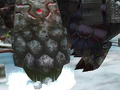

目次 > ゲームについて > 日本Falcom 攻略 > ZWEI II > ボス戦 > ガルガリオン
らんの眼
ZWEI II (ツヴァイ 2、ZWEI II Plus)
| 概要 | 情報 | 攻略チャート |
| フード交換 | ペットについて | ボス戦 |
| 敵キャラ一覧 | ハンターランク | G-コロッセオ |
| アイテム一覧 | ガジェット一覧 | トレジャー一覧 |
| ダンジョン一覧 | クリアデータ特典 | Plusの追加要素 |
| ZWEI II攻略へ | 目次へ戻る |
| ガルガリオン 前半 |
まず、ガルガリオンが左右どちらかの腕でパンチをしてくるので、その時にガルガリオンの顔を攻撃してください。 すると、次の攻撃までの間、一定時間口が開きっぱなしになるので、アルウェンの魔法で口を攻撃してください。「無垢の魔法」か、「焦熱の魔法」がいいと思います。 ガルガリオンの攻撃として、岩を飛ばしてくるものがあります。これは発動までの時間が長く、分かりやすくていいのですが、足場が狭いのでよけるのが少し難しいです。 次に、両手を合わせて魔法陣を作ってからの攻撃ですが、これは主人公たちの立っている位置にダメージを受ける柱ができるので、ひたすら動き回らなければなりません。 しかも、ガルガリオンの他の攻撃と重なるので、注意が必要です。 それともう一つ、腕を使った衝撃波があります。これは、普段と腕の動きが違うので、簡単に分かりますが、よけるのが面倒くさいです。 |
| ガルガリオン 後半 |
| ある程度ダメージを与えると、後半戦になります。後半は、うまくやればこちらが一方的に攻撃をし、無傷で終わらせることが可能です。 ダメージを与えるには、まず「爆弾」を使う必要があります。ガルガリオンの側に爆弾を置き、爆発するとガルガリオンが一定時間気絶します。 気絶したらガルガリオンの上に乗り、青緑色の部分を攻撃してください。そして、しばらく攻撃したら爆弾を置き、気絶させ攻撃するの繰り返しです。 ガルガリオンの上に乗るには、首元からジャンプすればいいです。 ガルガリオンが爆弾を落とすことがありますが、短期戦を望むならあらかじめ爆弾をいくつか持っておくといいでしょう。  ガルガリオンの攻撃として、足を使った衝撃波があります。これは、見た目以上に有効範囲が狭いので、あまり怖くはありません。 次に岩を飛ばした攻撃ですが、2段階攻撃となっているので注意が必要です。しかし、発動前にガルガリオン周辺に岩が集まるので、すぐに分かります。 他にも炎を吐く場合がありますが、この攻撃は左右どちらかに逃げれば簡単によけることができます。 最後に、ガルガリオンが気絶していない状態の時に上に乗っていると、背中から黄色い光線を出し攻撃してくるので、気絶していないときは背中に乗らない方がいいです。 |
| 概要 | 情報 | 攻略チャート |
| フード交換 | ペットについて | ボス戦 |
| 敵キャラ一覧 | ハンターランク | G-コロッセオ |
| アイテム一覧 | ガジェット一覧 | トレジャー一覧 |
| ダンジョン一覧 | クリアデータ特典 | Plusの追加要素 |
| ページの上部へ | ZWEI II 攻略へ | 目次へ戻る |